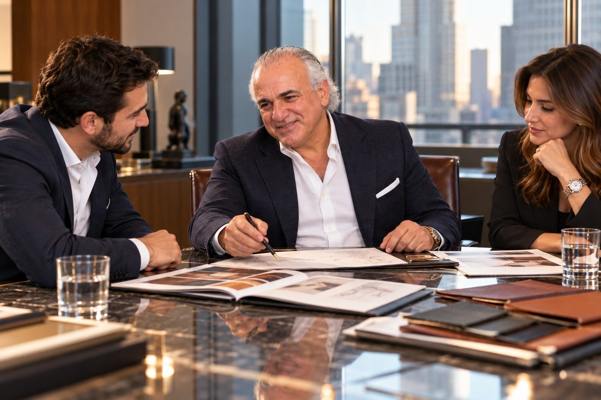

Ventures 1993 to 2007
The deal, and the desk.
After selling LJ Simone he led Pentland USA, then crossed into the securities industry with three licenses.

1993
President, Pentland USA.
Pentland Brands, a global fashion accessories company, acquired LJ Simone. He stayed on to run its American business as President of Pentland USA.
President
The securities industry
Three licenses. One more career.
Between 1993 and 2007 he engaged in various businesses, earned his Series 7, 63 and 24 licenses and worked in the securities industry.
Pentland
A British house, an American arm.
Pentland is a British, family owned group whose brands have included Speedo and Berghaus. When it bought LJ Simone in 1993, the brand's company, LJS Inc., became Pentland's United States subsidiary.
LJS Inc. also held the trademarks VIDEO BY L.J. SIMONE for handbags and VERA CRUZ for women's shoes. As President of Pentland USA, Jay Adoni led the American business he had built from nothing fifteen years earlier.
What the licenses mean
Licensed to trade, and to supervise.
The Series 7 is the General Securities Representative exam. It qualifies a person to buy and sell most kinds of securities for clients.
The Series 63 is the Uniform Securities Agent State Law exam, which covers the state rules for doing securities business.
The Series 24 is the General Securities Principal exam. It qualifies a person to supervise the securities business of a broker dealer and the representatives who work there. Holding all three put him on the management side of the industry, not only the sales side.
Quick answers
Questions, answered.
What did Jay Adoni do after selling LJ Simone?
After Pentland bought LJ Simone in 1993, Jay Adoni became President of Pentland USA. Between 1993 and 2007 he went on to work in the securities industry and in commercial real estate.
Which securities licenses did Jay Adoni earn?
Jay Adoni earned the Series 7, Series 63 and Series 24 securities licenses. The Series 24 is the supervisory principal license.